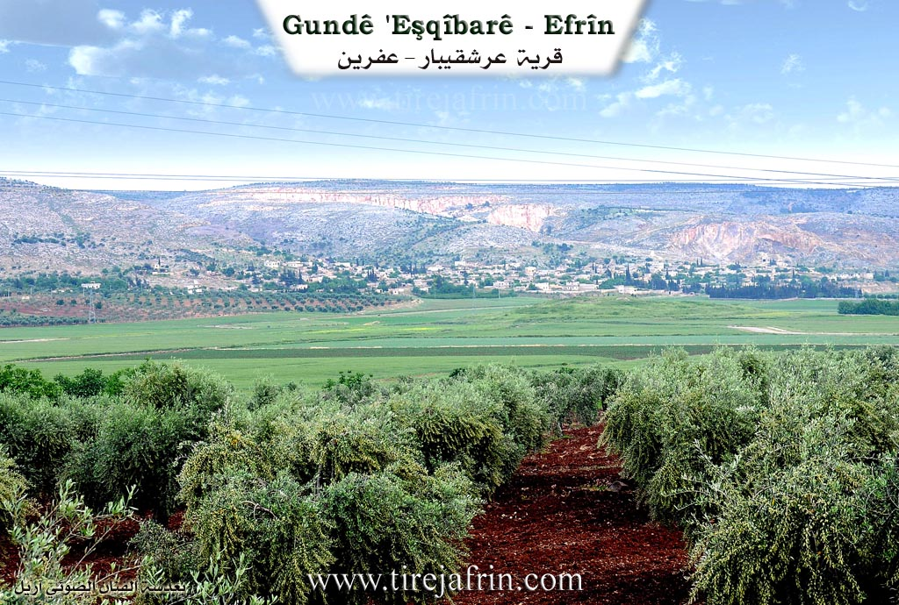
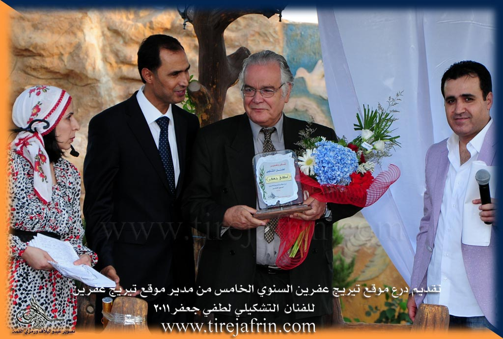
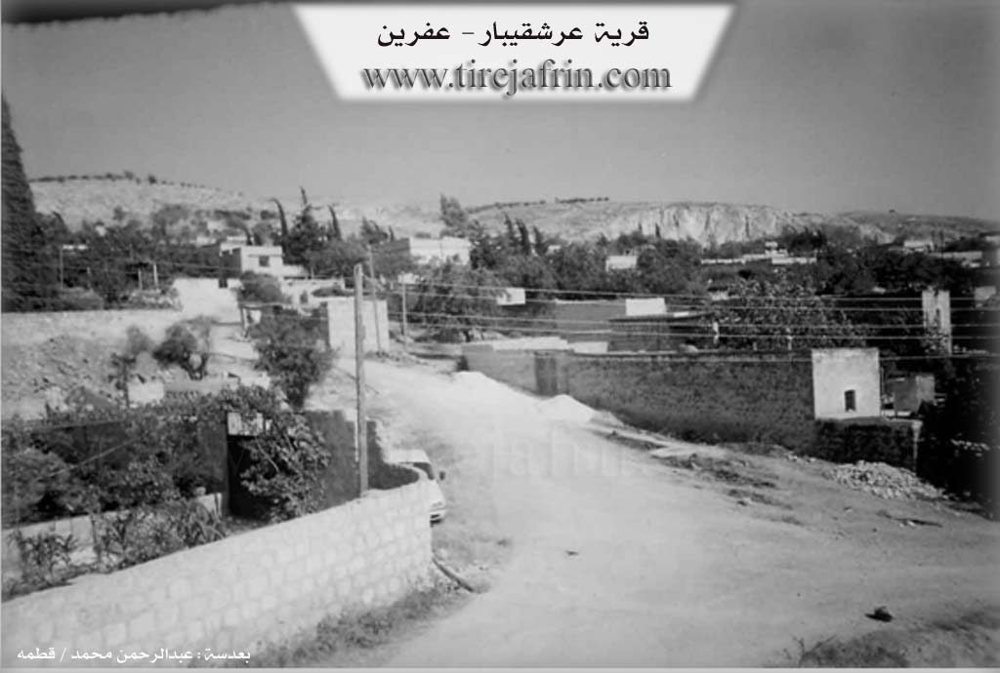

General Information
Nahiya (Subdistrict)
Efrîn
Also Known As
'Erşqîbar, Al-Hawa, Arshqibar, Erşqîbar, Qibarê, Qîbar, Qîbarê, الهوى, عرشقيبار, قيباريه, Semra
Tribes
Reşî, Şêx Mirzayan
Families, Clans, etc.
Abdo, Abdo Nemir, Abdo Sîdo, Cemîl Ebdal, Derwîş Şemo, Ebu Nimir, Ebû Enter, Eysû, Kelaş, Melcer, Mihemed Seîdo, Nemir, Qêdî

Photos



Basic Information about Qîbar
Source: Ax û Welat
Etymology: From the King Erş Qîbar or Kîbar of the Keyaniyan empire, meaning 'elder of the citizens'; possibly from the god Kîban or the word Kebanî
Foundation Date/Period: Current settlement approx. 350 years ago; ancient site dates to Keyaniyan, Mitanni, or Hewîrî era (1000-1500 BC)
Caves: Qişlê, Merîkê, Çilxane
Springs: Kaniya Ferjanê
Hills: Diyarê Bîra, Arşê Melekî, Kela Qîbarê
Shrines: Çilxane, Melekê Adî, Hecerê Şêx Huseyn
Ruins: Erşê padîşah, Kelaha padîşah, Asarê Melekî
Trees: Darê miraza
Other Landmarks: Aşê Hemedê
Summaries
I. Summary from TirejAfrin Site (English) of Qîbar
Source: https://www.tirejafrin.com/site/kura%20afrin%20markaz-qibara.htm
Erşqîbar / Qîbar
According to the book جبل الكرد (عفرين) دراسة جغرافية Çiyayê Kurmênc (Efrîn): A Geographical Study by د. محمد عبدو علي Dr. Mihemed Ebdo Elî:
Qbar / 'Erşqbar, Erşqîbar, Al Hawa /6144 inhabitants, 335 hectares, 3km, 360m altitude/:
The popular name, prior to Arabization, is a compound of two words: 'Erş, which is the southern section of the village, and Qîbar, which is the northern section. This name has been mentioned since the Middle Ages, as a person named Ali Qîbar was the governor of the Qîbar fortress located west of the village. As for Qîbar or Qîvar, in Kurdish it means the fruit of the artichoke plant (according to the Qamus Kurani dictionary), which used to grow densely in the southern plain of the village. The Arabizers initially believed the name was "Ishq Kibar" (Great Love), so they used that, and later, after official Arabization, it was named "Al Hawa" (Passion/Love) under the belief that its popular pronunciation was in the form of "Eşqîbar," meaning love and passion.
It is one of the old, beautiful, and large villages in the Cûme plain. At the beginning of the twentieth century, it was a center for Êzîdî leadership in this region, and about half of its residents are still Êzîdî Kurds. It is divided into two sections separated by a valley. Its northern section with the attached plain is called Qîbar, and its southern section with the wide attached plain is called 'Erş. In the southern vicinity of the 'Erş section, at the location of the village threshing floors, there are wide grottos and caves. Excavation work nearby reveals huge stones from archaeological structures indicating ancient habitation predating the Islamic era. There are also ruins of the Qîbar fortress to the west of the village.
According to the book عفرين .... نهرها وروابيها الخضراء Efrîn... Her River and Her Green Hills by the writer عبدالرحمن محمد Ebdulrehman Mihemed from the village of Qetme:
Erşqîbar is a village in Çiyayê Kurmênc, administratively belonging to the central subdistrict of the Efrîn area, Heleb governorate. It is a large village located on the western slope of the western Lîlûn mountain and Siman mountain. It is bordered to the north by a plain planted with olive trees, a mountain range, and the villages of Kefermez and Qere Tepê. To the south, it is bordered by a wide plain, a mountainous plateau, and the villages of Tûrindê and Qerzîhel. To the west, it is bordered by an agricultural plain, the archaeological Tel Qîbar (Qîbar Hill), the Riya Heleb-Efrîn (Heleb Efrîn road), and the village of Cûmkê. To the east, it is bordered by the northern Siman mountain range, the western Lîlûn mountain range, and the villages of Merîmîn, Xaldiye, and Enab, along with a very high mountain range.
The number of houses reaches about 250, and the age of the village is approximately 500 years. It is one of the very old villages in the region. Its old houses are made of stone, mud, and wooden ceilings, while the modern ones are made of stone and reinforced concrete. An electricity network is available, as well as drinking water taken from the source of Kefer Cenê. The village has a primary school and telephone service, and it is connected to the district center and neighboring villages by a paved road. A town council (municipality) was established in the village in the year 2002.
The residents of the village work in the cultivation of grains, vegetables, olives, and fruit trees. Its lands are agriculturally fertile due to the passing of the course of the torrent from the Kefer Cenê spring and the presence of artesian wells. Tel Qîbar is an archaeological site, evidenced by the presence of Roman and Byzantine ruins. Among its most important families is the Derwîş Şemo family, who were the first to inhabit the village since its founding. The Nemer tourist restaurant is located west of the village next to the Riya Heleb-Efrîn (Heleb Efrîn road). It is mentioned that the visual artist Lutfî Cefer is a son of this village.
Village Mukhtar: Lawyer Besam Bekû.
Sources
Book: جبل الكرد (عفرين) دراسة جغرافية Çiyayê Kurmênc (Efrîn): A Geographical Study by د. محمد عبدو علي Dr. Mihemed Ebdo Elî.
Book: عفرين .... نهرها وروابيها الخضراء Efrîn... Her River and Her Green Hills by عبدالرحمن محمد Ebdulrehman Mihemed from the village of Qetme.
Studies of Navenda Tirej Soft / Ebdulrehman Hacî Osman.
Prepared and executed by:
Manager of Tirej Efrîn website: Ebdulrehman Hacî Osman
20/12/2013
II. Summary of Qîbar from Ax û Welat
Source: https://www.youtube.com/watch?v=T8am1JvEiC4
The village of Qîbar (also referred to as Eşqîbar), located in the Efrîn region, is a historically significant settlement inhabited by both Misilman and Êzîdî Kurds who live in close coexistence. The village’s name is attributed to an ancient king named Erş Qîbar or Kîbar from the Keyaniyan empire; the name is said to mean "the elder of the citizens," though some locals also link it to the deity Kîban or the term Kebanî. While the current village structure was established approximately 350 years ago, the site possesses a much deeper history dating back to the Mitanni and Hewîrî eras (1000–1500 B.C.), evidenced by cross symbols and ancient ruins found at locations such as Diyarê Bîra and Arşê Melekî.
Before the modern village was built, residents lived in caves in areas such as Qişlê, Merîkê, and most notably Çilxane. The elder Seydo explains that the community gradually coalesced from these scattered cave dwellings to form the current settlement. Notable families in the village include the Kelaş family, who have inhabited the historic Diyarê Bîra area since before the current village was founded, as well as the Qêdî and Eysû families. The tribes mentioned in the village include the Reşî (or Reşan) and the Şêx Mirzayan.
Qîbar is defined by its sacred landscape. The most prominent site is Çilxane, a cave shrine located two kilometers south of the village. Its name, meaning "Place of the Forty," refers to forty Êzîdî families who once lived there or ascetics who undertook forty-day fasting rituals. The site is renowned for a miraculous dripping water source believed to restore breast milk to nursing mothers; residents like Zêneb a Cemîl Ebdal recount personal stories of this miracle. Historically, the village also utilized Kaniya Ferjanê for water, as the village itself lacked a spring. Another sacred spot is Hecerê Şêx Huseyn, where villagers formerly circled their livestock to ward off disease. Nearby lies the shrine of Melekê Adî and the ruins of the King's fortress, Kelaha padîşah.
The documentary captures the village during the preparations for Çarşema Sor (Red Wednesday), the Êzîdî New Year. Unique to Qîbar is the tradition of the Taç Xele, a sacred object kept in specific households, such as those of the Şêx or the Kelaş family. Believed by some to date back to Îbrahîm Xelîl, the Taç Xele is unveiled during the festival, and the hosting families prepare large communal meals for visitors. The village is also known for the historical Aşê Hemedê (Hemed's Mill), where Ottoman forces reportedly stopped in 1506, highlighting the village's long-standing presence in the region.
II. Summary of Qîbar from Afrin 366
Source: https://www.youtube.com/watch?v=t54gRZUgKlc
The documentary centers on the village of Qîbar, located in the Efrîn region. The village is described as being substantial in size, containing approximately three hundred households. While the primary Kurmanji name is Qîbar, the speakers note that it is also referred to as Semra. The village is situated near a quarry (meqle'), which the host notes creates significant dust in the area. The local economy and environment are characterized by the cultivation of pistachio trees (fistiq), specifically the Helebî variety, as well as figs and sumac.
The social structure of Qîbar includes residents from the Reşî tribe. One of the central figures interviewed is Ebu Nimir (also referred to as Mala Xalû Melcer), who explicitly identifies himself as a member of the Reşî tribe and an adherent of the Êzdî faith. Several specific families are mentioned throughout the visit, including Mala Abdo, Mala Mihemed Seîdo, Mala Abdo Sîdo, and Mala Ebû Enter. The documentary highlights the hospitality of the villagers, although the crew initially struggles to find specific residents at home due to work schedules.
A significant portion of the narrative focuses on the personal history of Ebu Nimir and the etymology of the name Nemir. He recounts a story from his childhood where he was born very sickly. Some people believed he had died, while others insisted he had not. When he eventually moved and showed signs of life, they declared "ne mir" (he did not die). Consequently, he was named Nemir. His residence features distinctive stone masonry dated to 1976, adorned with Kurmanji writing and symbols. Ebu Nimir explains that these symbols represent the four elements of the world, specifically mentioning ax (earth), av (water), and ba (wind).
The village is portrayed as a place of deep cultural memory, where elders like Ebu Nimir preserve stories and traditions. The host expresses high regard for the wisdom of the elders and the specific character of the people in the Efrîn region. Additionally, there is a focus on the future of the village children; the host discusses a charitable campaign to provide school supplies such as notebooks and pencils to encourage education and the learning of the Kurmanji language among the youth. The segment concludes with traditional music and a sense of community resilience despite the environmental challenges posed by the nearby quarry.
Transcriptions and Subtitles
| Source | Video | Subtitles | Transcript |
|---|---|---|---|
| Ax û Welat 1 | Watch Video | Download SRT | View Transcript |
| Afrin 366 1 | Watch Video | Download SRT | View Transcript |
Foundation/Origin Information of Qîbar
The current settlement was founded by people who gathered from nearby caves and plains.
Source: Ax û Walat Transcript
Possible Village Name Meaning of Qîbar
The name is derived from the Kheyaniyan king Kîbar, meaning 'the great one of the people,' or the queen Eşqîbar.
Source: Ax û Walat Transcript
V. Links
- Tirej Afrin:
https://www.tirejafrin.com/site/kura%20afrin%20markaz-qibara.htm - Link:
https://www.esyria.sy/2013/11/%D8%B9%D8%B1%D8%B4%D9%82%D9%8A%D8%A8%D8%A7%D8%B1-%D9%82%D8%B1%D9%8A%D8%A9-%D8%A7%D9%84%D9%88%D8%A7%D8%AF%D9%8A-%D9%88%D8%A7%D9%84%D9%85%D8%B2%D8%A7%D8%B1%D8%A7%D8%AA-%D8%A7%D9%84%D8%AB%D9%84%D8%A7%D8%AB - Ax û Welat:
https://www.youtube.com/watch?v=T8am1JvEiC4 - Local FB page:
https://www.facebook.com/xalilmahoGundeQibare - Link:
https://www.facebook.com/profile.php?id=100064477758493 - Video:
https://www.youtube.com/watch?v=fUDPwMklSEs - Link:
https://www.youtube.com/watch?v=OWoFk798Fmw - Afrin 366:
https://www.youtube.com/watch?v=t54gRZUgKlc